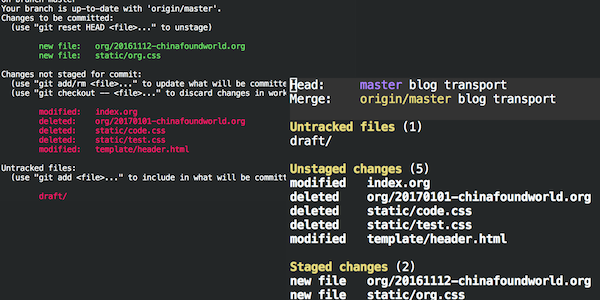
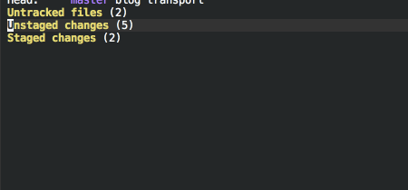
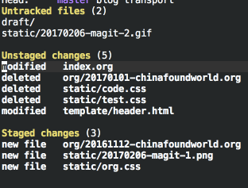
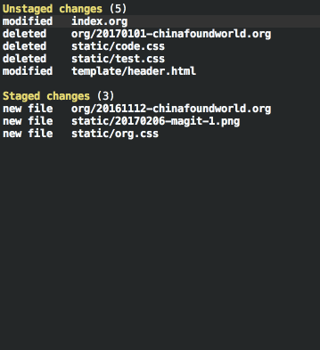
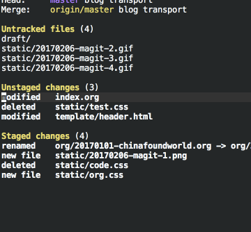
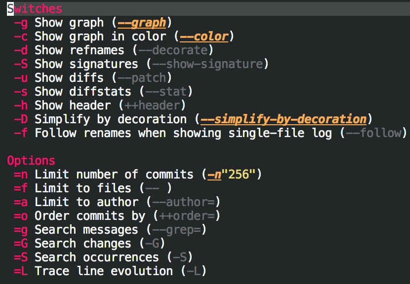
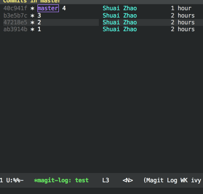
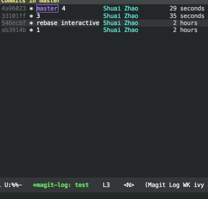

Magit - MagicGitTool for Emacs
为什么
- emacs内置，可以与文件编辑无缝操作。
- 相比于命令行，对于提交内容的编辑操作更方便。
当然，相比于现在流行的一些git客户端，magit还是没有什么特别的优势，特别是对于大量文件的merge会出现卡顿的现象。但就像emacs每个其他的功能一样，如果你不是emacser，那么这就不是必须；否则就是你很好的帮手。
本文将关注Magit在具体使用上的内容，而不会过多牵涉git的知识。
安装及配置
配置依然按照我的习惯：
- 使用package管理包
- vi键位
- 使用leader键
所以：
将magit、evil-magit加入package-selected-packages，并将status页面绑定到gs按键上:
(require 'evil-magit) (evil-leader/set-key "gs" 'magit-status)
这样，环境就配置完了。(evil-magit：https://github.com/justbur/evil-magit， 将magit适配了evil)
git status
M-x magit-status或 空格+gs打开status页面，q退出。
status页面是magit的入口，其作用相当于git status，可以看到对比图：

看起来差不多。但是magit提供了更方便的方式来对文件的修改进行访问以及操作。
访问
每类文件都有4个展示等级，快捷键分别为1 2 3 4 :

其中2（展示文件层）和4（展示修改细节）常用。
通过j k上下移动光标(C-j C-k按块移动光标)，在文件上（或任何上一级项上）按tab将会展示其细节。
操作
具体见evil-magit， 这里只列出常用的一部分：
| 快捷键 | 功能 |
| s/u | stage/unstage |
| c | commit |
| p | push |
| x | discard |
| X | untrack |
| v | select |
| b | branch |
| fu | fetch |
| Fu | pull |
| r/ru | rebase |
| o/O | reset |
| i | ignore |
| zz/zp | stash |
| l | log |
| gr | refresh |
| $ | show git code |
| m | merge |
| AA | cherry-pick |
下面分别进行描述(对于像cc这种两个按键的，实际上是有popup提示的，所以记不住也没关系)：
stage/unstage
直接对文件进行stage/unstage，即对文件进行s/u：

对块进行stage/unstage，即对块进行s/u:

commit/push
stage完之后，按cc进行提交，此时会打开新的buffer，在其中编写commit message，C-c C-c提交，C-c C-k取消。
cc - commit
ca - amend
select
magit允许同时对多项进行操作：

branch
bb - checkout
bc - checkout new branch
git log
在status页面按ll就进入了log页面，大概相当于
git log --format="%h * %s %an %ar"
在每个提交上，按回车就可以查看这个提交的详细信息，大概相当于
git show xxx --pretty=fuller
1-4对于这个页面也同样有效。
操作
log
git log相对于git status功能上需要更多的对于查询的侧重，而log页面也有丰富的参数可供使用：

从"~/.emacs.d/elpa/magit-20170203.1633/magit-log.el"中可以看到每个选项对应的实际命令行参数：
:switches ((?g "Show graph" "--graph") (?c "Show graph in color" "--color") (?d "Show refnames" "--decorate") (?S "Show signatures" "--show-signature") (?u "Show diffs" "--patch") (?s "Show diffstats" "--stat") (?h "Show header" "++header") (?D "Simplify by decoration" "--simplify-by-decoration") (?f "Follow renames when showing single-file log" "--follow")) :options ((?n "Limit number of commits" "-n") (?f "Limit to files" "-- " magit-read-files) (?a "Limit to author" "--author=") (?o "Order commits by" "++order=" magit-log-select-order) (?g "Search messages" "--grep=") (?G "Search changes" "-G") (?S "Search occurrences" "-S") (?L "Trace line evolution" "-L" magit-read-file-trace))
只要按-g或者=n等，就可以设置、取消这些参数了。对于查询某个文件的历史、某个提交者的历史来说都非常方便。
rebase interactive
即git rebase -i，magit里变得稍微方便了一点:

在log页面选择squash开始的commit，然后流程跟命令行也差不多。
reset
log页面另一个主要功能就是代码回滚了：
